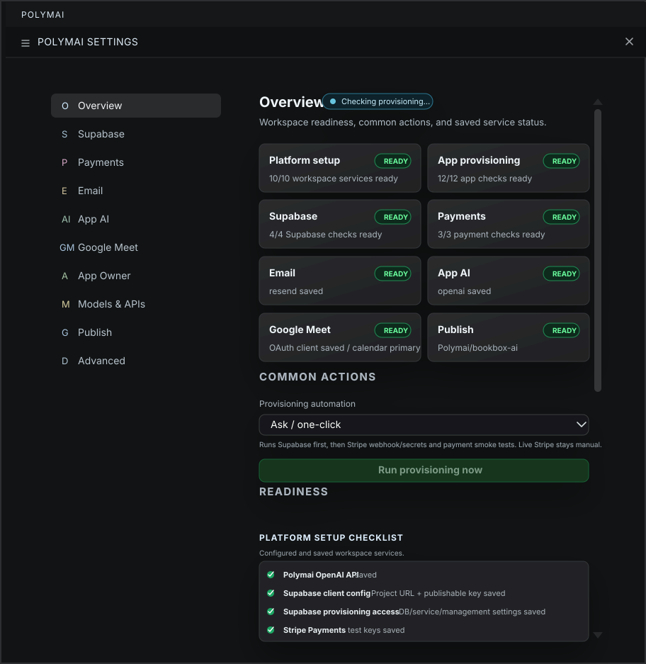

Plan
- Brief
- Scope
- Architecture
AI Software Factory
From idea to production-ready software.
Polymai runs as a VS Code extension and creates the plan, architecture, database, services, UI, and safe update path.
Examples
Loading examples...
Product
Polymai separates the build into focused surfaces for interface, styles, behavior, data, service setup, and preview. That structure makes the first version easier to inspect and future updates easier to keep narrow.

Controlled Iteration
Most tools can produce a first answer. Polymai is designed for the second change, the third change, and the point where the project still needs to make sense.
Changes are planned around the current app instead of drifting into broad rewrites.
Briefs, plans, files, previews, and checks give each change a reason and a surface to inspect.
Existing behavior, visual style, and service boundaries are preserved unless the request changes them.
Build Flow
Users move through describe, scope, build, preview, check, and iterate. Every step leaves a concrete surface a developer can inspect.
Runtime
Plan Supabase database, auth, storage, policies, and app-scoped resources when the app needs persistence.
Use Edge Functions for email, AI jobs, checkout sessions, billing portals, webhooks, and background tasks.
Browser apps receive only public runtime values. Provider keys, webhook secrets, and service credentials stay server-side.
Local preview, screenshots, smoke checks, and provisioning readiness keep the build grounded in the running app.
Answers
Concise facts for buyers and builders evaluating what Polymai does.
Polymai is an AI app-building workflow for turning an app idea into a structured, previewable, reviewable software project.
It shapes the brief, plans the surface, generates focused files, connects service artifacts, previews the result, and keeps later changes scoped.
Polymai is suited for SaaS tools, customer portals, dashboards, internal workflows, admin panels, data-backed apps, and service-aware prototypes.
It can plan around databases, auth, storage, Edge Functions, payments, email, AI provider calls, webhooks, scheduled jobs, GitHub, and publishing.
Provider secrets stay out of browser files and privileged work is routed through server-side environments or provider-owned configuration.
Use VS Code, bring an app brief, and connect the provider accounts required by the app, such as OpenAI, Supabase, GitHub, Stripe, or email.
Start
A few sentences about the app, users, data, and goal are enough to start. Polymai helps shape the technical path before code is produced.